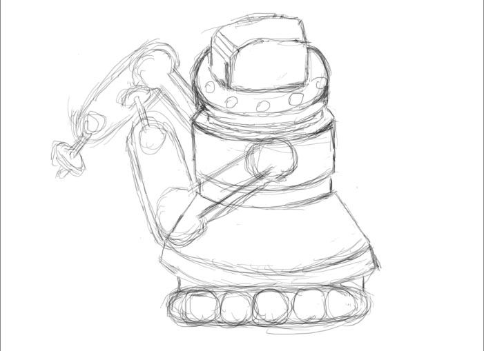
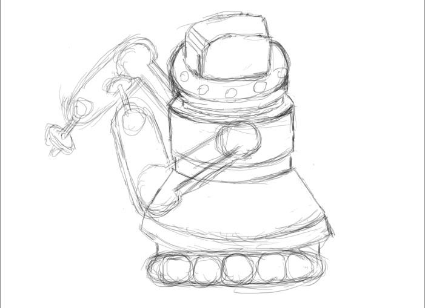

Here is an example of our robot's immaculate cooking/baking skills. Doesn't that please your palate? Yum!
The RTC 9000
Advertisment
Here is an example of our robot's immaculate cooking/baking skills. Doesn't that please your palate? Yum!
The RTC 9000